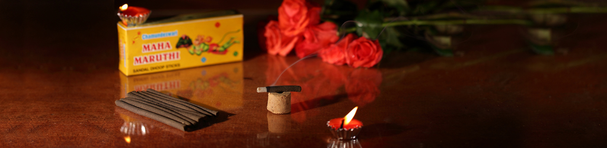
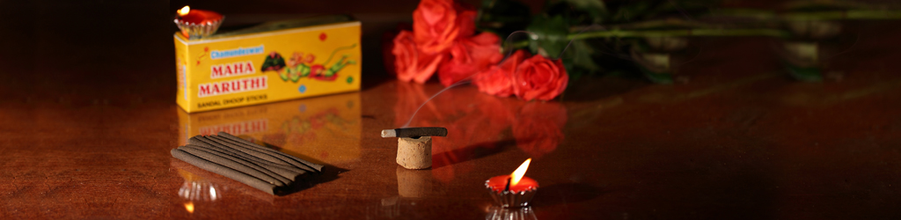

History
The brand started its journey way back in the 1950s at the foot of the popular Rockfort Temple in Trichy, marketed by the retail shop “Ayyer Sandal Shop” or “Ayyer Sandana Kadai. Essential pooja items were marketed which included the Vibudhi, Kumkum, Sandal Wood, Sandal Paste, Agarbattis and items for abishegam like Paneer, Diraviya podi (powder) etc. which were about 10 to 25 items in total. The shop catered only to the temples where only devotion and serving the temples was the moto. The shop was known for their honesty and best price as they were available at wholesale price. They were soon known as the best sellers of sandal pulp. Agarbattis were slowly capturing the market and Ayyer Sandana Kadai ventured into manufacturing Agarbattis and slowly Ayyer Sadnana Kadai evolved as a household brand. It continues to be the favorite shop for pooja articles.
The brand “Chamundeswari” originated during the 1970s. The products were being manufactured under the umbrella brand named “Sree Chamundeswari”. The product range started widening which began with Agarbattis. Several fragrances were introduced by the brand, one of which was called the Dasangam (perfumed flora) in powdered form . This was soon improvised into an instant cone shaped Dasangam for convenience of use. The brand maintains quality standards and carries the tradition along on its shoulders as it travels along the years.
The brand was growing on popularity along with quality and value for money in the southern regions of Tamil Nadu. Dasangam was well received and accepted by the customers and is still the most popular product known for its pleasant fragrance. During the 1990s market saw an array of products with the popular Incense Sambrani sticks or popularly known as Computer Sambarani. This broke the complicated and conventional way of using sambrani by making it easy to use. The brand keeps the tradition alive. The product was a huge hit in the market since it was all the more convenient to use and all the more safe to use retaining the fragrance of the holy sambrani.
In the year 2000, the brand had its manufacturing unit under the name of “Sree Hariprasath Industries” which is located in Kambarasampettai, Trichy near the banks of the Kaveri River. “Sree Hariprasath Industries” increased the productivity and holds responsibility for innovations in the products. Premium quality products were introduced which included the Computer Sambrani Delux and Loban Dhoop cups. Each product has its own identity and fragrance which makes it one of the most popular brands in down south.
Overview of the manufacturing unit
Sree Hariprasath Industries is spread over 12000 sq feet area. The unit provides machinery to produce wood dust which is the base ingredient of all the products of Chamundeswari. They are then molded into various shapes like the cylindrical Computer Sambrani, Dhoop cups etc. The unit allows effective utilization of raw materials with minimum wastage and helps in maintaining quality with consistency in all products.
Quality
Quality and value for money has been the major key elements in the products ever since the 1950s. Products are known for its quality and prices are believed to be more than satisfactory for the customers. Every product is manufactured with natural materials and wood dust as base. The products ensure ease of use. Every product has its own unique identity and fragrance.
Our Clients
Our clients are wide spread across in North in Bombay marketed by Aacharya Porducts and Laxmi Trading Company. The brand is popular in Trivandrum, Banglore marketed by Jayjee Pvt Ltd and in Chennai by Giri Traders.
Uses of Chamundeswari
The various attributes attached to the brand name :
C - Cure (Relieves Stress , use for yoga , helps in concentration)H - Handout ( can be offered as a gift)
A - Auromatheraphy
M - Meditation
U - Unwind
N - Nature
D - Divine
E - Enlighten
S - Sanctity (Purifies the ambience)
W - Worship
A - Aesthetic
R - Room Freshener
I - Intervene (touches your senses)
3/1 VSR Castle, 2/104 Pillayar Koil street, Thoraipakkam, OMR, Chennai - 600097.
Mobile : 9791772220, E-mail : poojaessentials@gmail.com